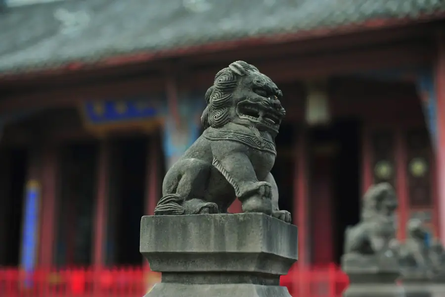

Deyang Airport Transfer & Private Car
Licensed professional driver in Sichuan's archaeological and aviation hub. Fixed price. Explore the legendary Sanxingdui bronzes, China's ancient Shu civilization, and the 2008 earthquake memorial with a private car and driver.
Deyang in Pictures
Real scenes from Deyang — landmarks, streets and everyday life.

Deyang at a Glance
Deyang (德阳) — "Virtue Sun" or "Yang of Virtue" — is a city in Sichuan Province, approximately 60km northwest of Chengdu, on the Chengdu-Mianyang corridor at the foot of the Longmen Mountains (龙门山). Deyang is best known as the gateway to Sanxingdui (三星堆) — one of the most extraordinary archaeological discoveries in China — and as an important center of China's aviation industry.
Sanxingdui — China's Lost Bronze Age Civilization
The defining cultural claim of the Deyang area is Sanxingdui (三星堆) — an extraordinary archaeological site near the city of Guanghan, approximately 25km from central Deyang. In 1986, excavations at Sanxingdui revealed two sacrificial pits containing thousands of objects — bronze masks, bronze figures, jade cong, gold scepters, and other artifacts — from a previously unknown Bronze Age civilization that flourished in the Sichuan basin between approximately 1600 and 1200 BCE.
The Sanxingdui civilization — broadly contemporaneous with the Shang Dynasty in central China but showing no direct connection to it — produced some of the most spectacular bronze artifacts ever found: giant bronze masks with protruding pupils, a three-meter-tall bronze "bushman" figure, a life-size bronze head with gold foil mask, and intricate bronze sacred trees. In 2021-2022, new excavations uncovered six more sacrificial pits with thousands of new artifacts. The Sanxingdui Museum (三星堆博物馆) — one of China's finest archaeological museums — displays the extraordinary finds from the site.
Name Origin
The name Deyang (德阳) — "Virtue Sun" or "Yang of Virtue" — comes from the Tang Dynasty (618–907 CE). The character outh. The name reflects the city's location on the sunny (southern) side of the Longmen Mountains and its historical cultural importance.
China's Aviation Industry Center
Deyang is an important center of China's aviation industry. The city and its surrounding area are home to major aviation manufacturing facilities — part of the Chengdu Aircraft Industry Group ecosystem that produces China's fighter jets, including the J-10 Vigorous Dragon (the first Chinese fourth-generation fighter, which entered service in the 1990s) and the J-20 Chengdu Jian-20 (China's first fifth-generation stealth fighter). Deyang's aviation industry developed during the Third Line construction period (1960s–1980s), when heavy industry was moved to Sichuan's interior for security reasons.
While these facilities are not open to the public, the aviation industry has shaped Deyang's character — the city has a large, well-educated workforce with a strong engineering culture. The city's proximity to Chengdu's aviation research and development facilities makes it a natural extension of China's aerospace industry.
Geography & Location
Deyang is located in northwestern Sichuan Province, on the Chengdu-Mianyang ( Chengdu–Mianyang corridor) — one of the most economically active axes in western China. The city sits at the transition between the flat Chengdu Plain and the beginning of the mountainous Longmen Mountain front. The Jin River (涪江, not to be confused with the Fu River in other areas) flows through the city. Deyang is approximately 60km from Chengdu's city center and 50km from the Chengdu metropolitan area.
Top deyang Attractions
Visit the Sanxingdui Museum (one of China's most important archaeological sites), Deyang Confucian Temple, Shifang Chinese Rose Valley, and Jinyan Lake.
Popular Deyang Routes
Fixed-price private car service for Deyang's most popular journeys.
⛰️ Deyang Railway → City Center
From ¥240($33.8)~5 km · 15 min · Economy/Business/MPV
Deyang Railway Station (德阳站) is the main arrival point for high-speed rail visitors from Chengdu (30 min), Mianyang (20 min), and the Chengdu-Mianyang high-speed rail corridor. Your driver meets you at the station exit with a name board and drives directly to your Deyang hotel or to the Sanxingdui Museum direction.
🏛️ Sanxingdui Museum Half-Day
From ¥240($33.8)~25 km · 2–3 hours · Business vehicle
Your driver takes you to the Sanxingdui Museum in Guanghan — approximately 25km from Deyang — for a half-day visit to one of China's most extraordinary archaeological museums. The new museum building (2023) is as impressive as its collection. The driver waits while you explore the full museum. The Sanxingdui collection is best experienced with a guide who can explain the archaeological context.
🎭 Sanxingdui & Earthquake Memorial Full-Day
From ¥240($33.8)~60 km · 6–7 hours · Business vehicle
Your driver takes you on a full-day circuit: the Sanxingdui Museum in the morning, then the Hanwang Earthquake Memorial in Shifang (about 30km from Deyang). This is one of the most moving and educational days in the Sichuan area — the extraordinary ancient bronze civilization in the morning, and the 2008 earthquake memorial in the afternoon. Lunch at a local restaurant in Shifang or Guanghan.
⛰️ Chengdu Day Trip from Deyang
From ¥240($33.8)~60 km · 1 hr drive · Full day intercity
Your driver takes you to Chengdu for a full day — visiting the Giant Panda Base (best in the morning), the Jinli Street old district, and lunch at a traditional Sichuan restaurant. Return to Deyang in the evening. Deyang is only 30 minutes from Chengdu by high-speed rail, but a private car allows you to visit on your own schedule, avoiding the train timetable.
Transparent Pricing in Deyang
Published rates, no estimate games. Check the numbers yourself before you book — and the price you see is the price your driver is paid from.
Fixed Price List — 德阳 (Deyang)
Published rates from our 2026 quote sheet. Renminbi first, USD for reference at 1 USD = ¥7.10. Every price below already includes tolls, parking, driver service and free airport waiting time (up to 60 minutes after your flight lands) — nothing is added on the day.
🛬 Airport & Intercity Transfer
One flat fare for airport pickup, drop-off or city-to-city — intercity costs the same as the airport run. 35 km and 60 minutes included; beyond that we charge by the minute and the kilometre at the rates shown.
| Vehicle | Seats | Bags | Fixed fare | USD | Beyond 35 km / 60 min |
|---|---|---|---|---|---|
| 4-seat Economy Sedan | 4 | 2 | ¥240 | ≈ $33.8 | ¥1.22/min · ¥5.3/km |
| 4-seat Comfort Sedan | 4 | 2 | ¥343 | ≈ $48.31 | ¥1.34/min · ¥5.87/km |
| 6-seat Business Van | 6 | 3 | ¥418 | ≈ $58.87 | ¥1.43/min · ¥6.24/km |
| 8-11-seat Business Van | 11 | 4 | ¥671 | ≈ $94.51 | ¥1.86/min · ¥8.11/km |
| 12-18-seat Minibus | 18 | 4 | ¥780 | ≈ $109.86 | ¥2.07/min · ¥9.05/km |
| 19-55-seat Coach Bus | 55 | 5 | ¥952 | ≈ $134.08 | ¥2.36/min · ¥10.3/km |
🚗 Hourly Private Charter
Book the car and the hours, keep the car for the day. Unused kilometres can be carried into the next tier, so a long day never turns into a penalty. The driver stays with you — you set the stops.
| Vehicle | 2h / 35km | 4h / 50km | 6h / 75km | 8h / 100km | 10h / 125km |
|---|---|---|---|---|---|
| 4-seat Private Car | ¥286 | ¥455 | ¥559 | ¥650 | ¥793 |
| 6-seat Business Van | ¥377 | ¥598 | ¥728 | ¥845 | ¥1027 |
| 8-11-seat Business Van | ¥543 | ¥861 | ¥1048 | ¥1217 | ¥1479 |
| 12-18-seat Minibus | ¥651 | ¥1033 | ¥1258 | ¥1460 | ¥1775 |
| 19-55-seat Coach Bus | ¥782 | ¥1240 | ¥1510 | ¥1752 | ¥2130 |
Why travellers book Deyang with Chinawheely
Six things you get with every booking — in Deyang and across all 346 cities on the platform.
Licensed travel agency, not a ride-hail app
Chinawheely is a registered travel agency (L-HUB-101603). Your booking is a travel contract with a licensed operator — not a broker handing your number to whoever answers the phone.
One locked price, shown before you pay
The price you see is the price you pay. Tolls, parking, driver service and airport waiting time are already inside it. No surge pricing, no meter, no cash-on-the-day surprise.
Flight tracked, waiting time on us
We watch your flight number in real time. If it lands late or is delayed, your driver shifts with it and the waiting time stays on us — not on your bill.
A licensed driver who knows the city
Every car is driven by a professional local driver who knows the routes, the shortcuts and the parking that actually works near the attractions — with English communication and a name board on arrival.
Free changes up to 48 hours before
Plans move. Reschedule or cancel any booking free of charge up to 48 hours before your scheduled pickup, straight from your confirmation link.
A real human on WhatsApp, 8AM–12AM Beijing time
One message reaches a person who can re-price, re-route or re-plan your trip on the spot. No ticket queue, no chatbot loop.
Book Deyang at the published price
Pick your vehicle, see the fare line by line, and pay by PayPal or Alipay. Free changes up to 48 hours before pickup — or ask on WhatsApp and we will hold a car for you.
The quote is valid for 48 hours, and you can change or cancel free up to 48 hours before pickup.
Getting to Deyang: Airports & Railway Stations
Getting to Deyang by air, rail, or road
🚄 Deyang Railway Station
⛰️ Deyang Railway Station (德阳站) & Deyang North (德阳北站)
High-speed rail hub · Chengdu–Mianyang corridor
Deyang Railway Station (德阳站) is on the Chengdu–Mianyang high-speed rail corridor, with frequent high-speed services to Chengdu (30 min), Mianyang (20 min), and the broader national rail network. There is no commercial airport in Deyang — visitors arrive by high-speed rail or private car from Chengdu's airports. Pre-book your private car to meet you at the station exit. Deyang North Station serves standard rail services.
✈️ Nearest Airports
🏘️ Chengdu Tianfu International Airport (TFU)
~80 km · 1.5 hr drive
Chengdu Tianfu International Airport (TFU) is Sichuan Province's main international hub, with extensive domestic and international flights. A private car from Tianfu Airport to Deyang takes approximately 1.5 hours via the for visitors arriving from overseas.
🌊 Chengdu Shuangliu International Airport (CTU)
~70 km · 1.5 hr drive
Chengdu Shuangliu International Airport (CTU) is closer to Deyang than Tianfu (TFU) and handles extensive domestic flights and some international routes. The drive from Shuangliu to Deyang takes approximately 1.5 hours. Alternatively, take the high-speed train from Chengdu to Deyang (30 min) — your driver can meet you at Deyang Station.
⛰️ Mianyang Nanjiao Airport (MIG)
~50 km · 60 min drive
Mianyang Nanjiao Airport (MIG) is a smaller regional airport handling domestic flights. It is closer to Deyang than Chengdu's airports. If your flight arrives at Mianyang, a private car transfer to Deyang takes approximately 60 minutes. This can be faster than routing through Chengdu.
Deyang's Best Photo Spots
The places in Deyang worth stopping for — and a car that waits while you take the shot.
🏛️ Sanxingdui Museum
Best at sunrise
Sanxingdui Museum is one of Deyang's signature sights and a natural place to stop for a photo. Your driver drops you at the entrance, waits while you shoot, and takes you on to the next stop in the same area.
🛕 Deyang Confucian Temple
Best in the late afternoon
Deyang Confucian Temple is one of Deyang's signature sights and a natural place to stop for a photo. Your driver drops you at the entrance, waits while you shoot, and takes you on to the next stop in the same area.
🏘️ Shifang Chinese Rose Valley
Best at dusk
Shifang Chinese Rose Valley is one of Deyang's signature sights and a natural place to stop for a photo. Your driver drops you at the entrance, waits while you shoot, and takes you on to the next stop in the same area.
💧 and Jinyan Lake
Best in soft morning light
and Jinyan Lake is one of Deyang's signature sights and a natural place to stop for a photo. Your driver drops you at the entrance, waits while you shoot, and takes you on to the next stop in the same area.
Food & Shopping in Deyang
🍜 Must-Try Deyang & Sichuan Cuisine
Deyang Cold Noodles (德阳凉面)
Deyang's signature cold noodles (凉面) — thin wheat noodles tossed in a spicy, tangy sauce with sesame paste, scallion, and Sichuan pepper — are a beloved local specialty. The Deyang version is distinguished by its particularly good quality noodles and a sauce that balances spicy, sweet, sour, and savory flavors. Found at street food stalls throughout Deyang, particularly near the old city area.
Sichuan Boiled Fish (水煮鱼)
Sichuan boiled fish (水煮鱼) — fresh river fish poached in a broth spiked with Sichuan pepper and chili, then served in a bowl lined with bean sprouts and poured over with a cloud of sizzling hot oil — is one of Sichuan's most famous dishes. Found at Sichuan restaurants throughout Deyang. The fish is fresh and the numbing-spicy broth is the defining experience of the dish.
Dan Dan Noodles (担担面)
Dan Dan noodles (担担面) — a classic Sichuan street food of noodles in a spicy sauce with minced pork, preserved vegetables, and Sichuan pepper — are served at noodle shops throughout Deyang. The sauce — a combination of chili oil, Sichuan pepper, sesame paste, and soy sauce — is what defines the dish. Deyang's version is particularly good at the traditional noodle shops near the old city.
Sichuan Hotpot (四川火锅)
Sichuan hotpot — with its signature malachite copper pot, numbing Sichuan pepper broth, and fresh meat and vegetable dipping items — is a must in Sichuan. Deyang's hotpot restaurants are excellent — using the same quality ingredients as Chengdu but at lower prices. The city's proximity to the Chengdu plain means access to excellent fresh vegetables and mushrooms from the surrounding farmland.
Mianyang Rice Noodles (绵阳米粉)
Mianyang rice noodles (绵阳米粉) — fine rice noodles in a clear or spicy broth with various toppings — are a specialty of the Chengdu-Mianyang corridor and found throughout Deyang. The fine rice noodles have a distinctive silky texture that differs from wheat noodles. A popular breakfast or lunch dish, served at small noodle shops throughout the city.
🛍️ Shopping Destinations
Sanxingdui Museum Gift Shop
The Sanxingdui Museum gift shop sells high-quality reproductions of the bronze artifacts — bronze mask replicas, sacred tree models, and jade cong reproductions — as well as books on Sanxingdui archaeology and the Sanxingdui civilization. The best-quality Sanxingdui replicas are found here. Also sells small bronze artifact pendants and earrings that make distinctive souvenirs.
Deyang Old City Night Market
The Deyang night market — near the old city area and along the main commercial streets — is the heart of the city's street food and local product scene. Open from around 5 PM until 10 PM, with dozens of food stalls selling cold noodles, grilled skewers, hotpot, and local specialties. A fun, lively atmosphere with locals enjoying the evening.
🎁 What to Buy in Deyang
Sanxingdui Bronze Replicas
High-quality reproductions of Sanxingdui bronze artifacts — from small decorative items (pendants, earrings) to larger sculptural replicas of the famous masks and sacred trees — sold at the Sanxingdui Museum gift shop. The quality of these replicas is high — some are cast using traditional bronze-casting techniques similar to those used 3,000 years ago. A meaningful and beautiful souvenir from one of China's most important archaeological sites.
Mianyang Handicraft Products
The Mianyang-Deyang area is known for traditional handicraft products — including handwoven textiles, traditional Sichuanese paper-cutting, and bamboo crafts. The Mianyang area in particular has a tradition of producing high-quality handicrafts sold at local markets and specialty shops. Your driver can take you to the best local markets for these products.
Sichuan Pepper & Spice Products
Sichuan pepper (花椒) and the region's distinctive spice products — dried red chilies, Sichuan peppercorns, and the famous "mouth-numbing" spice mixes — are sold at food markets throughout Deyang. Buy at the morning market for the freshest products. The best quality Sichuan pepper comes from the Ganzi Tibetan area of western Sichuan, but the Deyang area also produces excellent quality.
Intangible Cultural Heritage & Living Crafts of Deyang
Traditional crafts and cultural traditions of Sichuan's archaeological and aviation city.
🏺 Sanxingdui Bronze Casting — Ancient Craft
The bronze casting tradition documented at Sanxingdui — using the lost-wax (cire perdue) casting method to create the extraordinary bronze masks, sacred trees, and figures — represents one of the most sophisticated bronze-casting traditions of the ancient world. While the Sanxingdui civilization itself is long extinct, the traditional bronze casting craft continues in Sichuan's traditional workshops. Some Deyang craftspeople still practice traditional bronze casting techniques, producing decorative objects and architectural fittings.
Where to see: Sanxingdui Museum bronze artifacts, traditional metalwork workshops in the Deyang area.
🧵 Sichuan Embroidery (蜀绣)
Sichuan embroidery (蜀绣) — one of China's four major regional embroidery traditions, alongside Suzhou, Hunan, and Guangdong — is practiced throughout the Sichuan basin including Deyang. Sichuan embroidery is characterized by its use of soft silk threads, its delicate needlework, and its distinctive designs featuring pandas, landscapes, and flowers. The craft is practiced in workshops producing high-quality embroidered artworks, clothing, and decorative items.
Where to find: Specialty handicraft shops, Deyang Museum cultural shop, Chengdu Sichuan Embroidery Research Institute.
✂️ Sichuan Paper-Cutting (剪纸)
Paper-cutting is a beloved folk art throughout Sichuan Province, with a tradition reflecting the agricultural character of the Sichuan Basin. The designs feature local motifs — pandas, Sichuan pepper, lotus flowers, and auspicious symbols — and are characterized by bold cuts and strong graphic impact. Paper-cutting is practiced at cultural centers and by folk artists throughout the Deyang area, particularly during festivals.
Where to find: Deyang night market, cultural centers, festival markets.
🍜 Deyang Cold Noodle Making
The craft of making Deyang's signature cold noodles (凉面) — the particular preparation of the noodles, the specific ratio of sauce ingredients, and the technique of tossing the noodles to achieve the right texture — is a local culinary tradition passed down through restaurant families. Each noodle shop has its own family recipe for the sauce, which is guarded as closely as any trade secret. The tradition reflects Deyang's identity as a city with strong local culinary pride.
Where to experience: Traditional Deyang noodle shops near the old city area.
🎭 Sichuan Opera (川剧)
Sichuan Opera (川剧) — with its famous face-changing (变脸) technique, Sichuanese dialect singing, and spectacular martial arts — is performed throughout Sichuan Province, including Deyang. The face-changing — where performers change masks instantaneously, revealing different colored faces representing different emotions or identities — is one of the most dramatic performance techniques in Chinese opera. Theatres in Deyang stage Sichuan Opera performances, particularly for tourist groups.
Where to experience: Deyang People's Theatre, Chengdu Sichuan Opera venues (for the best performances).
🏭 Third Line Aviation Industry Heritage
The Third Line construction heritage of Deyang — when the city was built as a major center of China's aviation industry from the 1960s — is an important part of the city's living heritage. The factories, the residential compounds, the engineering culture, and the sense of national purpose that shaped the city during this period are documented in the Industrial Heritage Museum. Many of the engineers and workers who built the Third Line factories are still living in Deyang, and their stories are part of the city's living memory.
Where to see: Deyang Industrial Heritage Museum, former Third Line factory districts.
Deyang Local Secrets
Insider tips to help you experience Deyang like a local.
Go to Sanxingdui First Thing in the Morning
The Sanxingdui Museum can get very busy with Chinese tour groups during the day. The best experience — most peaceful, most atmospheric — is to arrive at the museum at opening time (9 AM) and be among the first visitors. The new museum building is most impressive without crowds. The museum takes 2–3 hours to explore properly. If you're visiting on a weekend or public holiday, arriving at opening time is strongly recommended.
Eat Cold Noodles at the Old City Stalls
The best Deyang cold noodles (凉面) are served at the small street food stalls in the old city area — small, family-run places that have been perfecting the recipe for decades. Follow the locals — if there's a queue, it's the right stall. The best time to find these stalls is during the late afternoon and evening, when they set up along the old city lanes. Eat standing at the stall with a cold drink for the full experience.
Visit the Earthquake Memorial with Respect
The Hanwang Earthquake Memorial is a place of mourning for the thousands who died in the 2008 Sichuan Earthquake. When visiting, behave with appropriate respect — this is not a tourist site but a memorial. Speak quietly, don't take photos of the memorial plaques listing victims' names without good reason, and be aware that local people may be visiting to mourn lost loved ones. The experience is profoundly moving if approached with the right attitude.
Ask Your Driver for the Mountain Viewpoint
The viewpoint on the Deyang plain looking west toward the Longmen Mountains — particularly at sunset — is one of the most spectacular scenery spots in the Deyang area. Your driver knows the best viewpoints on the western edge of the city, where the flat Chengdu plain gives way to the dramatic mountain front. Stop for 20–30 minutes on the way back from another destination to watch the sunset over the mountains.
Go to the Morning Market for Fresh Produce
The Deyang morning market — open from around 6 AM to 10 AM near the old city — is where locals do their daily food shopping. The market has fresh vegetables from the Chengdu plain, live fish and seafood, Sichuan pepper and spices, and local agricultural products. It's a vivid, authentic experience of how Deyang's residents actually live, completely different from the tourist sites. Your driver can take you there early in the morning.
Ask Your Driver About the New Sanxingdui Excavations
The 2021-2022 new excavations at Sanxingdui — uncovering six additional sacrificial pits — are some of the most exciting ongoing archaeological discoveries in China. The new finds have not yet all been displayed, and your driver may know the latest developments from local news. Ask about the newest artifacts and what the archaeologists are still discovering. The Sanxingdui story is still unfolding — this is a living archaeological site.
Day Trips from Deyang
Real destinations around Deyang, reached comfortably with a private car and a licensed professional driver.
Best Time to Visit Deyang
The climate record of Deyang decides when the city is at its most comfortable to walk.
The annual average temperature is 16.5 °C; annual rainfall averages 816 mm; July is the hottest month at 25.9 °C; January the coldest at 5.7 °C; The climate pattern includes The monsoon.
Spring
Monthly means in March, April, May run 12–22 °C. Rainfall over those three months totals about 134 mm.
Summer
Monthly means in June, July, August run 24–26 °C. Rainfall over those three months totals about 487 mm.
Autumn
Monthly means in September, October, November run 12–22 °C. Rainfall over those three months totals about 174 mm.
Winter
Monthly means in December, January, February run 6–8 °C. Rainfall over those three months totals about 22 mm.
Useful Chinese Phrases for Deyang
A few words for Sichuan's archaeological city.
👋 Nǐ hǎo
你好
Hello — The universal greeting.
🙏 Xièxiè
谢谢
Thank you — Locals appreciate the effort.
🏺 Wǒ yào qù sān xīng duī bówùguǎn
我要去三星堆博物馆
I want to go to the Sanxingdui Museum — Tell your driver you'd like to visit the Sanxingdui Museum.
🍜 Wǒ yào chī liángmiàn
我要吃凉面
I want to eat cold noodles — Deyang's signature dish. Essential for the street food experience.
🌶️ Duōfàng diǎn huājiāo
多放点花椒
Add more Sichuan pepper — Tell the restaurant you want extra numbing pepper.
💰 Duōshao qián?
多少钱？
How much is this? — Essential for the night market and morning market.
Book Your Deyang Transfer
Fixed price, licensed professional driver. From Deyang Railway Station or any airport to Sanxingdui Museum, the earthquake memorial, and the Longmen Mountains.
Get Instant QuoteQuestions? WhatsApp +86-155-2777-1775
Travel Essentials for Your Deyang Trip
Make your Deyang Sanxingdui and archaeological journey smoother with these services.
Mobile Pocket Wi-Fi
Stay connected across Sichuan with a pocket Wi-Fi device. Pre-book online and pick up at Chengdu Airport or have it delivered to your Deyang hotel.
Book Wi-Fi at ChinaWiFiGoEnglish-Speaking Guide
Explore the Sanxingdui Museum and earthquake memorial with a professional English-speaking guide who knows the archaeological context and local history.
Book Guide at VIPChinaGuideMedical Services
Add a health checkup, dental cleaning, or traditional Chinese medicine session to your Deyang trip. Chengdu's medical services are excellent and affordable.
Book Medical at MediEscortChinaMore China destinations
Compare routes, published prices and local driver tips across the cities we cover.